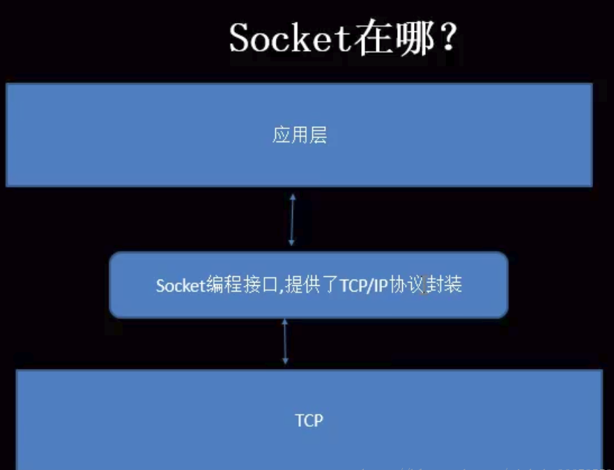
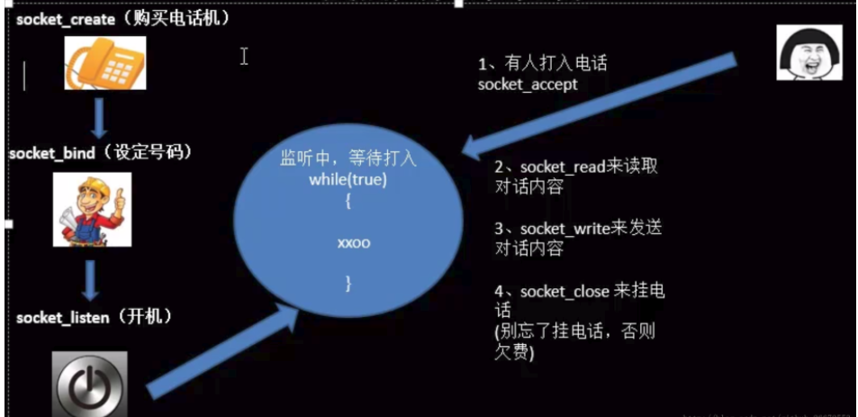
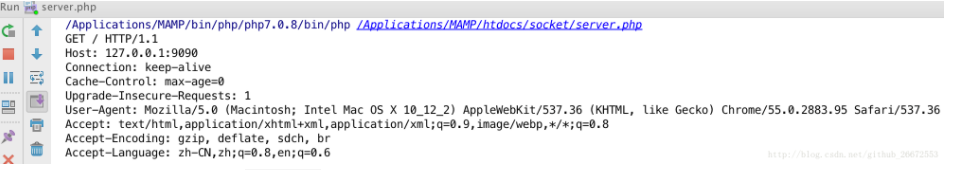

php_socket学习之旅-1
0 条评论什么是套接字（socket）
应用层通过传输层进行数据通信时，TCP和UDP会遇到同时为多个应用程序进程提供并发服务的问题。多个TCP连接或多个应用程序进程可能需要 通过同一个TCP协议端口传输数据。为了区别不同的应用程序进程和连接，许多计算机操作系统为应用程序与TCP／IP协议交互提供了称为套接字 (Socket)的接口，区分不同应用程序进程间的网络通信和连接。
IP地址 + 协议(TCP/UDP) + 端口 == 我们称之为套接字
socket的位置如下图所示:也就是在应用层与传输层之间

php socket实例
参考手册：http://php.net/manual/zh/book.sockets.php
socket服务端和客户端的交互类似与我们平时打电话

server.php
1 | <?php |
使用命令行执行这个文件，然后使用浏览器访问http://127.0.0.1:9090/，运行php控制窗口会输出

我们也可以模拟浏览器访问编写一个客户端
client.php1
2
3
4
5
6
7
8
9
10
11
<?php
$socket = socket_create(AF_INET,SOCK_STREAM,SOL_TCP); // 购买电话机
socket_connect($socket,'127.0.0.1',9090);
socket_write($socket,'I am client');
$buf = socket_read($socket,1024);
echo $buf;
socket_close($socket);
命令行执行这个文件，输出hello socket
同时服务端的窗口，会输出I am client